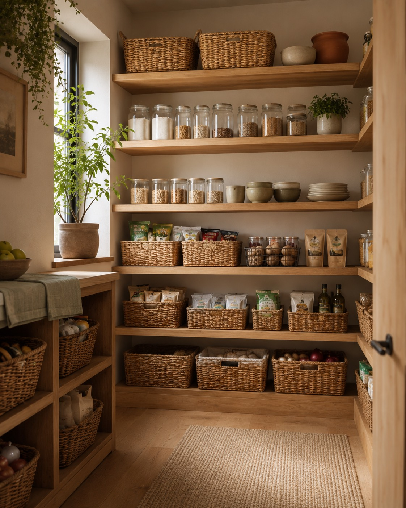
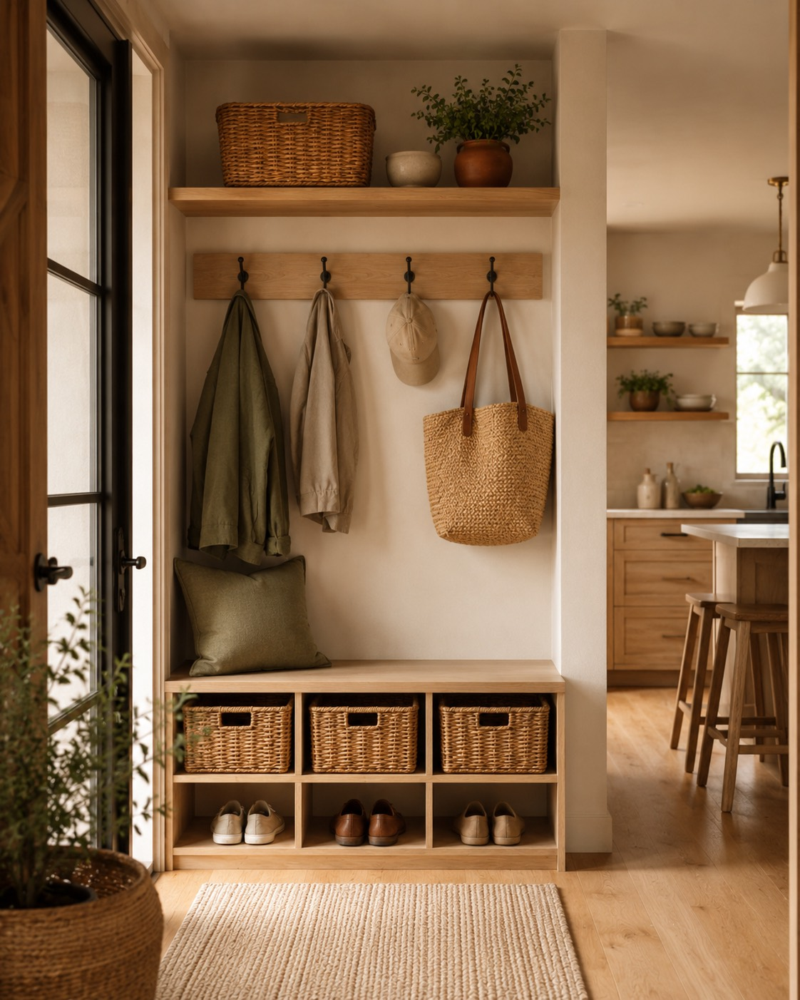
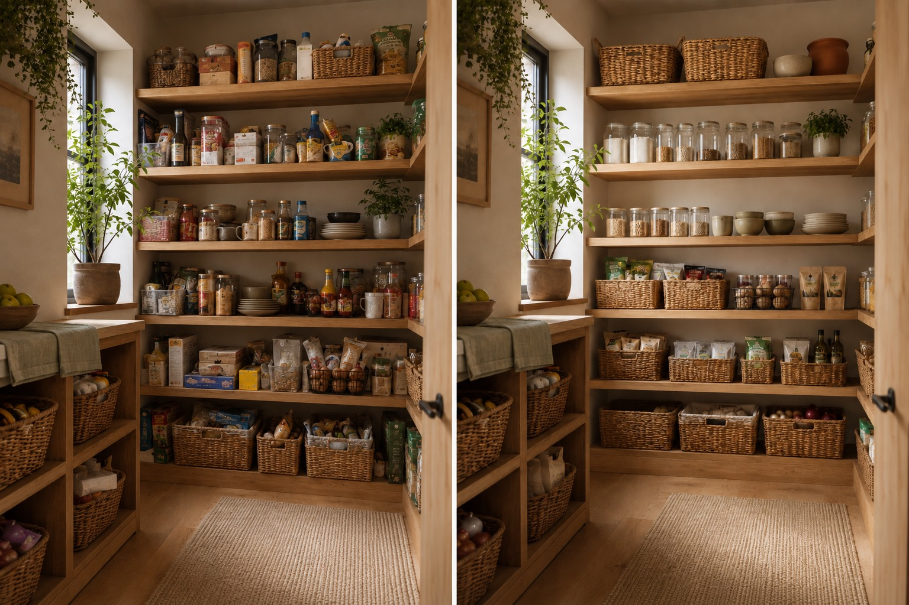
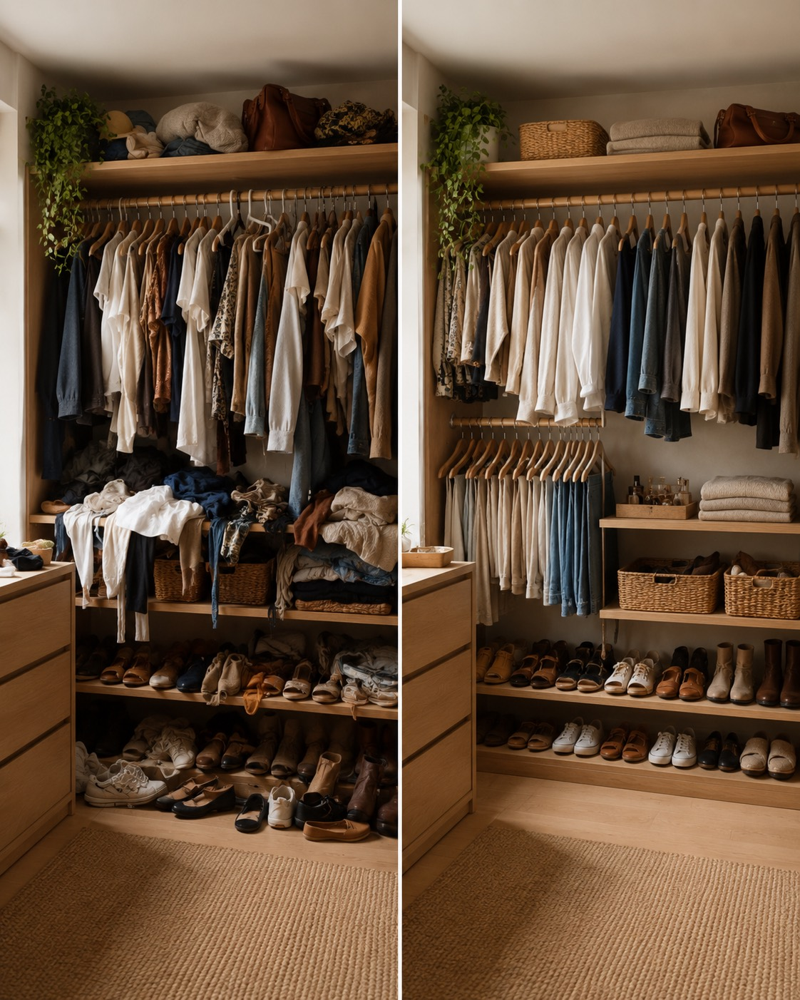
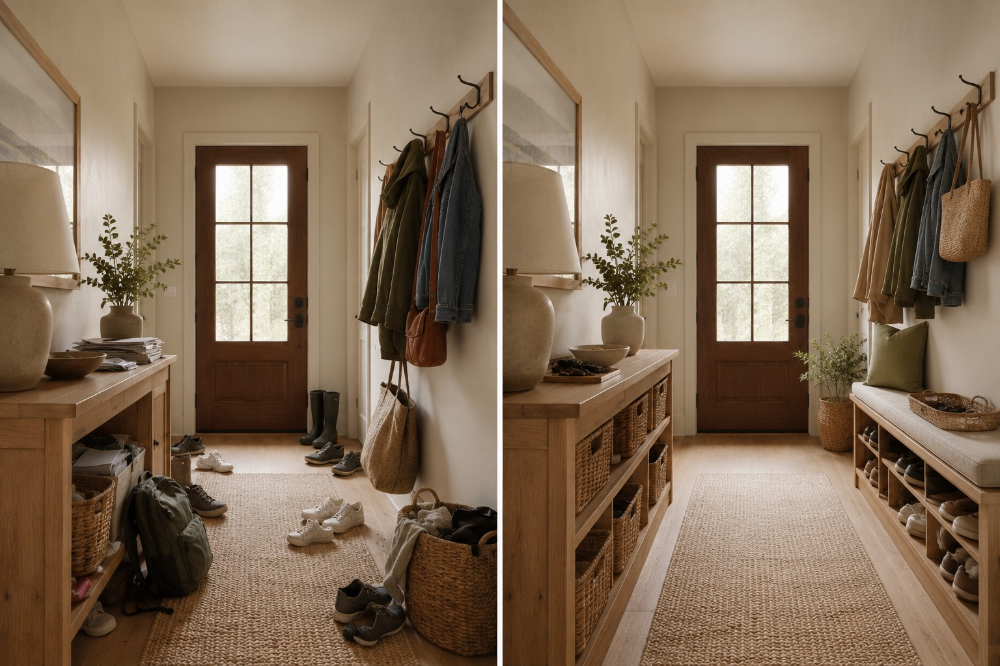
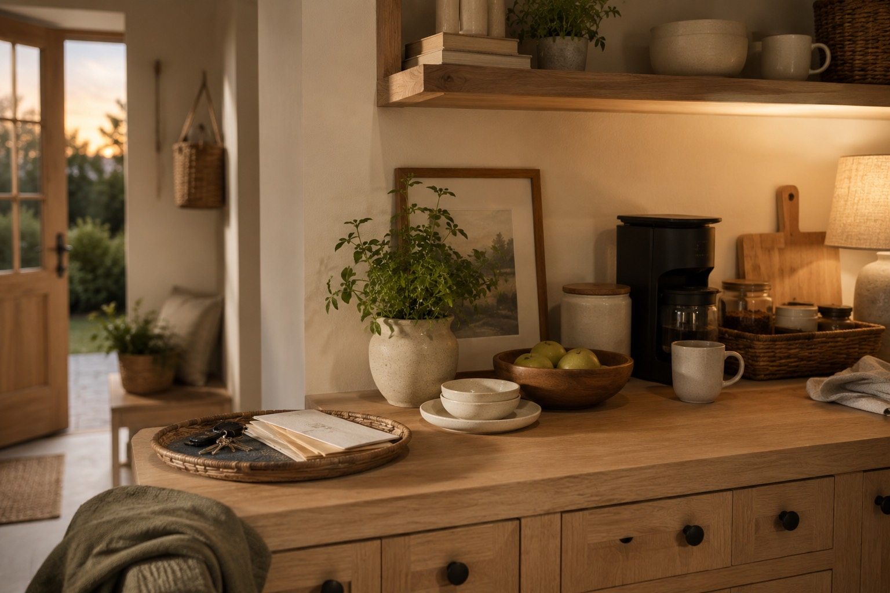
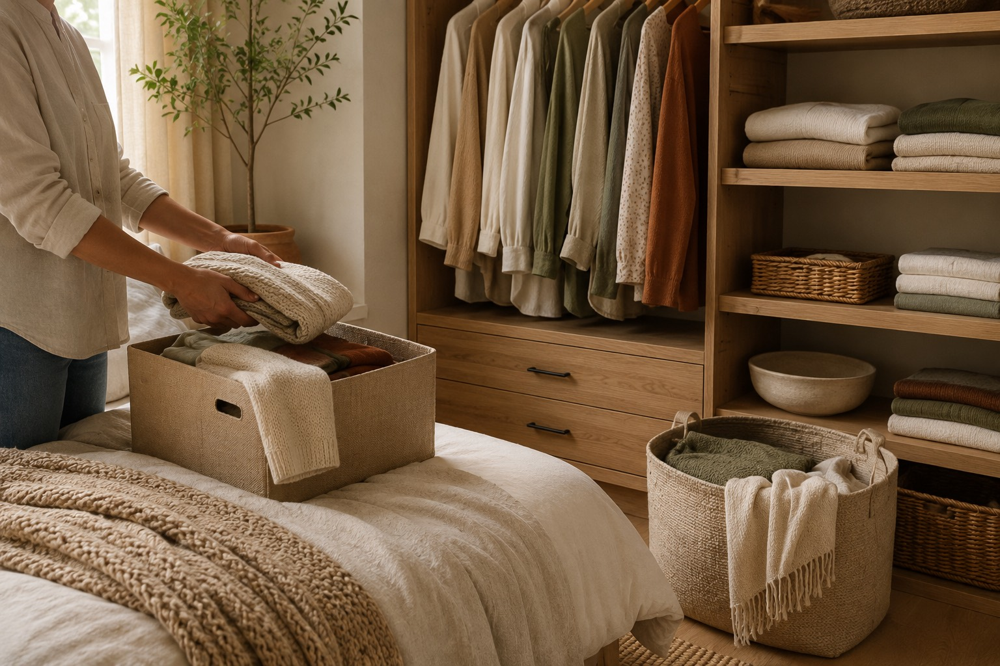
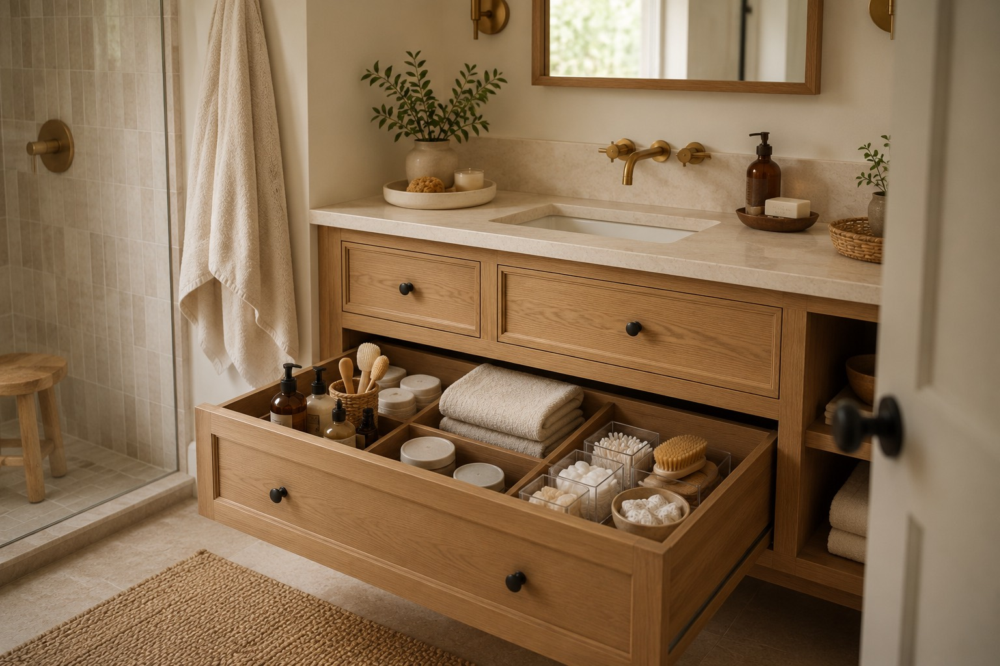

01
Home reset
From the catch-all closet to the whole home, we create intuitive spaces that make daily routines flow.
Learn more →A softer way forward
Whether you’re navigating a move, a new season of family life, or simply a home that no longer supports you, Tidy Haven meets you without judgment.
We sort the noise, honor what matters, and create systems that make everyday life feel lighter.
Our approach →Ways we can help

Leave the boxes behind. We plan, unpack, and set up your new home so it feels like yours from day one.
Learn more →A considered reset for the spaces that gather the most life: closets, kitchens, playrooms, and pantries.
Learn more →
The tidy haven method
A complimentary call to understand what’s not working—and what would feel better.
A custom plan shaped around your home, habits, and the things you want to keep close.
Hands-on organizing, styling, and simple systems you’ll actually want to maintain.
Real transformations
A few thoughtful systems can change how a home feels from the moment you walk in.

Kitchen & pantry reset
Clear zones and easy-to-reach staples create a kitchen that supports the whole household.

Closet reset
A considered wardrobe system makes getting ready feel simpler, lighter, and more personal.

Entryway reset
An intuitive landing zone brings order to the bags, shoes, and small things of daily family life.
“
My house doesn’t just look different. The way our family moves through the day feels different.
— MIRA, HOME RESET CLIENT
From the journal

HOME SYSTEMS · 5 MIN READ

GENTLE DECLUTTERING · 4 MIN READ

ROOM BY ROOM · 6 MIN READ
Ready when you are
Tell us a little about your home and what you’re hoping for. We’ll be in touch within two business days.
Book your complimentary call →